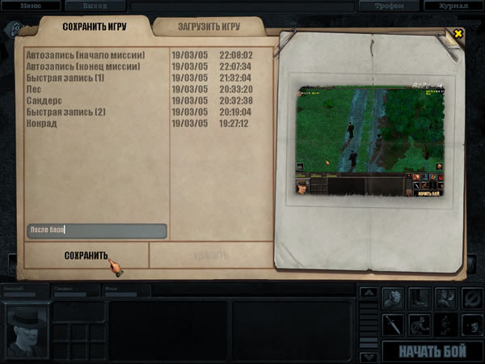

В игре «Silent Storm: Часовые» есть большое количество экранов, часть из них прямо связана с игровым процессом, другая часть выполняет вспомогательные функции. Все экраны можно отнести к нескольким группам:
- сервисные экраны (главное меню, игровое меню, группа экранов настроек) позволяют начать, продолжить или сохранить игру, изменить настройки интерфейса и т.д.;
- экраны персонажа (экран параметров персонажа, включающий параметры, биографию, статистику, умения и экран снаряжения) отображают информацию, связанную с выбранным персонажем, и позволяют посмотреть его текущие параметры, распределить опыт, а также открывают доступ ко всему снаряжению; сюда же относятся экраны, позволяющие создать нового персонажа в начале игры;
- экраны базы, где ваш главный персонаж получает задания, нанимает и увольняет членов своей группы, покупает и продает оружие, боеприпасы и снаряжение и куда группа возвращается после миссий для восстановления снаряжения и лечения;
- экраны кампании, к которым относятся глобальная карта, карта региона с доступными игровыми зонами, а также экран сбора трофеев и статистика миссии, они позволяют вашей группе выполнять выбранные задания, собирать трофеи и возвращаться на базу в промежутках между миссиями;
- экран заданий и журнал, где отображаются задания на текущую миссию и отмечается ход их выполнения, а также выводятся дневниковые записи главного героя;
- основной игровой экран (или боевой экран) отображает текущую игровую зону, где ваши персонажи выполняют различные задания; такой же экран используется в зонах случайных стычек и в лагере.
Игровые зоны
Игровая зона — это прямоугольный участок местности со всеми строениями и предметами, которые на нем находятся. Игровая зона является частью региона — географической области или района той страны, куда прибыла ваша группа. Как правило, действия в игровых зонах вызывают противодействие со стороны хорошо вооруженных противников. В сюжетных зонах, местоположение которых известно из полученных заданий или документов, вам необходимо сделать то, в чем состоит ваше задание (задания).
Помимо операций в сюжетных зонах, ваши персонажи могут встречать противника в пределах всего текущего региона и вступать с ним в случайные стычки, которые проходят в специальных игровых зонах. Эти зоны (обычно меньшего размера, чем сюжетные) отображают отдельные участки местности того региона, где находится группа. Вы можете оказаться на дороге, в городе или поселке, в поле или в глухом лесу... Наконец, путешествуя по региону, группа может остановиться в безопасном месте и разбить лагерь, чтобы обменяться различными предметами и подлечить ранения, если это необходимо. Все игровые зоны имеют одинаковый интерфейс, который подробно описан в главе «Боевой экран».
База — это место пребывания вашей группы в промежутках между миссиями. На базе вы можете получить новый приказ от вашего руководства и встретить персонажей, которые сообщат вам полезную информацию. К вашим услугам картотека сотрудников организации, владеющих различными специальностями и способностями; оружейная, где есть ваш личный склад; а также магазин с большим выбором оружия и боеприпасов. В медицинской комнате (лазарете) находятся медики, способные вылечить раненых членов группы. Интерфейсы базы подробно описаны в главе «Экраны базы».
Подсказки и «горячие» клавиши
Для удобства игрока экраны содержат большое количество контекстных подсказок, которые выводятся рядом с курсором мыши при наведении курсора на тот или иной объект. Например, в экране настроек можно получить справку по назначению различных переключателей и регуляторов, в боевом экране — подсказки ко всем кнопкам игровой панели, в окне выбора предметов персонажа и экране магазина на базе — подробные характеристики оружия, на которое указывает курсор мыши, и т.д. Подсказки выводятся на полупрозрачном фоне.
Хотя игра управляется в основном мышью, многие часто используемые функции, особенно на боевом экране, можно включать с клавиатуры. Эти клавиши упоминаются в контекстной подсказке при наведении курсора мыши на элемент управления. Использование «горячих» клавиш заметно облегчает игровой процесс. Список клавиш управления можно посмотреть в «Приложении».
Игровое меню
В любой момент игры, нажав клавишу [ F 10], можно вызвать игровое меню.
 Оно позволяет:
Оно позволяет:
Переиграть миссию — начать заново последнюю миссию, которую вы начали проходить.
Сохранить игру — сохранить текущую игру. Для каждой записи необходимо выбрать свое название. Кроме того, не вызывая меню, можно воспользоваться клавишей [ F 5] для «быстрой записи».
Загрузить игру — загрузить игру, выбрав ее из списка ранее сохраненных игр. Кроме того, не вызывая меню, можно воспользоваться клавишей [ F 8] для загрузки последней «быстрой записи».
Настройки — изменить игровые настройки (дублируют аналогичный пункт главного меню, см. «Экраны настроек»).
Выйти в главное меню — прервать игру и выйти в главное меню.
Выйти в Windows — прервать игру и выйти в Windows .
Вернуться в игру — вернуться в текущую игру.
Перед выходом в главное меню или в Windows вам будет выведен запрос, следует ли сохранить текущий момент игры.
Экран сохранения и загрузки игры
Этот экран используется для записи на диск текущего момента игры либо для загрузки сделанной ранее записи. В левой части экрана выводится список игр на одной из двух закладок. Для переключения между записью и чтением щелкните курсором по надписи на закладке сохранения или загрузки. Списки на обеих закладках выглядят одинаково, за исключением поля для ввода названия записи, которое есть только на закладке сохранения (см. снимок). В левой колонке списка выводятся названия игр, в правой — дата записи; выбранная строка отмечается маркером. Для просмотра длинного списка можно использовать линейку прокрутки справа от списка или колесо мыши. В правой части экрана выводится уменьшенное изображение экрана текущей игры (при сохранении) или игры, на которую указывает маркер (при загрузке).
Экран сохранения вызывается клавишей [ F 6], экран загрузки — [ F 7].
Вызов экрана сохранения и «быстрая запись» в некоторые моменты игры могут быть недоступны из-за ограничений, связанных с выбранной вами сложностью игры.
Для загрузки игры выберите требуемую строку и щелкните по пункту «Загрузить» в нижней части экрана. Для сохранения впишите в поле ввода название записи, затем выберите пункт «Сохранить». Название может включать буквы, цифры, дефис и символ подчеркивания. При сохранении игры вы можете выбрать название существующей записи, тогда новая запись заменит старую. Названия игр, присвоенные при «быстрой записи» или «автозаписи» (см. ниже), предопределены, их нельзя использовать при записи вручную.
Пункт «Удалить» позволяет стереть запись, на которую указывает маркер. При выборе этого пункта выводится запрос, вы должны подтвердить удаление записи.
Кнопка закрытия экрана
Обратите внимание на желтый крест в правом верхнем углу экрана сохранения/загрузки: это кнопка закрытия. Щелчок по ней закрывает текущий экран и возвращает к предыдущему экрану. Аналогичная кнопка есть в большинстве других экранов, стилизованных под журналы и документы.
Быстрая запись и автозапись
Быстрая запись дает возможность сохранить текущий момент игры, не выходя в экран сохранения и без вывода диалоговых окон. Она выполняется клавишей [ F 5], во время записи в центре экрана выводится табличка «Запись...». Для загрузки быстрой записи используется клавиша [F8], при этом появляется табличка «Загрузка...». Игра, сохраненная таким образом, имеет имя «быстрая запись». В игре предусмотрены две «быстрые записи» с именами Быстрая запись (1) и Быстрая запись (2), которые чередуются между собой. При загрузке «быстрой записи» вызывается та запись, которая была сделана последней; для загрузки предпоследней «быстрой записи» нужно войти в экран загрузки игры и выбрать соответствующую строку.
Автозапись выполняется автоматически каждый раз при входе в игровую зону или при выходе из нее. Записанная игра имеет имя Автозапись (Начало миссии) или Автозапись (Конец миссии). При каждой следующей автозаписи эти имена не меняются, старая автозапись всегда перезаписывается новой.
Экраны настроек
Эта группа экранов, стилизованных под журнал, предоставляет доступ к различным настройкам игры. Левая часть экранов представляет собой меню с перечнем всех групп — Видео, Звук, Игровые, Управление. Вид правой части зависит от конкретной группы. Для закрытия экрана и возврата в главное меню или в игровое меню служит желтый крест в правом верхнем углу. После выхода из экрана будут отменены все изменения, которые не были приняты.
Два поля в правой нижней части экранов имеют общие функции:
Применить — этот пункт позволяет принять изменения настроек, сделанные в текущем экране (при изменении настроек видеосистемы возможно кратковременное мерцание экрана).
По умолчанию — данный пункт сбрасывает внесенные вами изменения (как в текущий момент, так и раньше) и восстанавливает настройки, рекомендуемые по умолчанию для вашей конфигурации компьютера.
Все настройки могут быть трех типов.
Переключатели имеют два состояния: «включено» и «выключено» — и представляют собой квадраты, в которых можно поставить галочку. Чтобы изменить текущее значение, щелкните по полю переключателя курсором мыши.
Движковые регуляторы применяются для точной настройки какого-либо параметра: левое положение соответствует минимуму параметра, правое — максимуму. Ими можно управлять с помощью кнопок по краям линейки регулятора или «перетаскивая» курсором границу закрашенной части на нужное место.
Раскрывающиеся списки используются для выбора одного из нескольких вариантов настроек, их легко отличить по тексту, оканчивающемуся звездочкой. Список раскрывается, если щелкнуть курсором мыши по текстовой строке. После этого нужно выбрать курсором один из пунктов списка и щелкнуть по нему.
Настройки видеосистемы
Этот экран содержит настройки, которые могут существенно сказаться на качестве изображения и быстродействии видеовывода. Большая часть настроек устанавливается автоматически при первом запуске игры. Значительно изменять настройки по сравнению с теми, что предложены по умолчанию, не рекомендуется.

Гамма-коррекция управляет гамма-коррекцией в игре, т.е. яркостью изображения на промежуточных участках между наиболее темными и наиболее светлыми. Позволяет скорректировать изображение в зависимости от параметров вашего монитора. Нормальное значение: 50.
Разрешение задает видеорежим, в котором работает игра. Список возможных режимов соответствует параметрам вашего видеоконтроллера и монитора. Если компьютер отвечает рекомендуемым системным требованиям, желательно установить разрешение 1024 x 768 x 32 (или не менять разрешение, установленное по умолчанию). При низком быстродействии видеосистемы разрешение можно снизить, но это ухудшит качество изображения.
Качество управляет общим качеством изображения. Очень высокое дает наилучшее качество изображения, Высокое — хорошее качество, Среднее — компромисс между скоростью и качеством, Низкое — максимальную скорость видеовывода.
Качество текстур изменяет качество текстур, которые определяют внешний вид поверхностей. Очень высокое дает наилучшее качество текстур, Высокое — хорошее качество, Среднее — компромисс между скоростью и качеством, Низкое — максимальную скорость видеовывода.
Качество освещения влияет на скорость вывода изображения после сдвига камеры. Очень высокое сразу дает изображение наилучшего качества при существенном снижении скорости видеовывода на время отрисовки, Высокое — хорошее качество, время перерисовки возрастает снижение скорости видеовывода на время отрисовки, Среднее — компромисс между скоростью и Низкое — максимальная скорость видеовывода, окончательная отрисовка изображения не занимает дополнительного времени.
Анизотропная фильтрация влияет на вид текстуры на поверхностях, которые находятся под острым углом к камере. Значение x 8 дает наилучшее качество изображения при значительном снижении быстродействия, x 4 — очень хорошее качество, x 2 — хорошее качество, Нет — максимальную скорость видеовывода.
Антиалиазинг влияет на сглаживание изображения. Очень высокое — дает наивысшее качество сглаживания, Высокое — хорошее качество, Среднее — компромисс между скоростью и качеством, Низкое — изображение размазывается, скорость видеовывода максимальная.
Показывать листву — выводит изображение листвы у деревьев (при отключении выводятся только ветви). Нормальное значение: включено. Отключение листвы приводит к заметному увеличению скорости видеовывода на маломощных компьютерах, но снижает реалистичность изображения.
Примечание: на область зрения и видимость персонажей этот параметр не влияет.
Аппаратный курсор позволяет заменить цветные художественные курсоры в игре на простые курсоры-пиктограммы. Его включение приводит к снижению задержек курсора при сдвиге мыши и рекомендуется для маломощных компьютеров, если скорость движения обычного курсора слишком мала или он движется рывками. Нормальное значение: выключено.
Настройки звука
Этот экран управляет настройками, которые влияют на звуковые эффекты в игре.

Громкость звука определяет общую громкость звука. Нормальное значение: 100.
Громкость музыки определяет громкость музыки. Нормальное значение: 100.
Реплики персонажей определяет, будут ли ваши персонажи подтверждать полученные команды голосом, сообщать о том, что они видят, и о результатах своих действий или не будут. Нормальное значение: включено.
Субтитры ответов персонажей определяет, будут ли выводиться на экране субтитры с текстом ответов. Субтитры выводятся в левой части боевого экрана над игровой панелью. Нормальное значение: включено.
Примечание: в режиме диалога субтитры выводятся всегда, независимо от данной настройки.
Игровые настройки
На этом экране выводятся настройки, которые действуют на игровой процесс.

Задержка контекстной подсказки определяет время, через которое рядом с курсором мыши будет появляться окно с контекстной подсказкой, относящейся к предмету или элементу управления, на который показывает курсор. Нормальное значение: 10.
Скорость анимации определяет скорость, с которой персонажи будут выполнять все действия на экране. Нормальное значение: 100%.
Показывать иконки — определяет, будут ли отображаться специальные пиктограммы над персонажами противника. Нормальное состояние: включено.
Показывать подсказки — определяет, будут ли в игре отображаться подсказки и советы для лучшего освоения игрового процесса и будут ли эти подсказки сразу выводиться на экран. Нормальное состояние: включено.
Автоматическая запись дает возможность автоматически записывать игру при входе в игровую зону и при выходе из нее. Нормальное состояние: включено.
Только походовый режим препятствует переходу игры из пошагового режима в реальное время, когда ваши персонажи не атакуют и в их поле видимости нет противников. Нормальное состояние: выключено (т.е. режим реального времени разрешен).
Движение всегда по двойному щелчку мыши определяет, будут ли персонажи в режиме реального времени начинать движение только после двойного щелчка мыши по конечной точке пути, как это происходит в пошаговом режиме, или нет. Нормальное состояние: выключено (т.е. персонажи начинают движение сразу после указания им конечной точки).
Путь в режиме реального времени определяет, будет ли в режиме реального времени предполагаемая траектория движения персонажа отображаться пунктирной линией, как это происходит в пошаговом режиме. Нормальное состояние: включено.
Настройки управления
Этот экран определяет настройки, связанные с управлением камерой.

Чувствительность вращения камеры — изменяется скорость перемещения, вращения и наклона камеры при управлении камерой как с помощью клавиатуры, так и с помощью мыши. Нормальное значение: 50.
Чувствительность сдвига камеры — изменяется скорость прокрутки камеры по игровой зоне. Нормальное значение: 50.
Чувствительность рамки выделения — изменяется величина, на которую надо сдвинуть мышь при нажатой левой кнопке, чтобы началось выделение рамкой. Нормальное значение: 50.
Плавное движение курсора — альтернатива аппаратному курсору, позволяет снизить задержки нормального курсора при сдвиге мыши; скорость видеовывода немного снижается. Рекомендуется для маломощных компьютеров.
Инверсия сдвига по X , инверсия сдвига по Y , инверсия прокрутки по X , инверсия прокрутки по Y — для каждой из двух координат X и Y изменяется соответствие между направлением сдвига мыши и направлением перемещения камеры, а также изменяется направление, в котором нужно вращать колесо мыши, чтобы приблизить/удалить камеру.
Настройки профиля
На этом экране можно менять профили одного или нескольких игроков.

Текущий профиль позволяет выбрать один из существующих профилей. Профиль включает все игровые настройки и записи игры, сделанные игроком с данным именем. При первом запуске создается профиль по умолчанию ( default ), затем можно добавить новый профиль или выбрать один из существующих.
Удалить текущий профиль — позволяет удалить один из созданных профилей (профиль по умолчанию удалить нельзя).
Имя профиля — поле ввода для создания нового профиля. После ввода имени нужно щелкнуть по полю Добавить новый профиль. Новый профиль будет помещен в каталог с указанным именем.